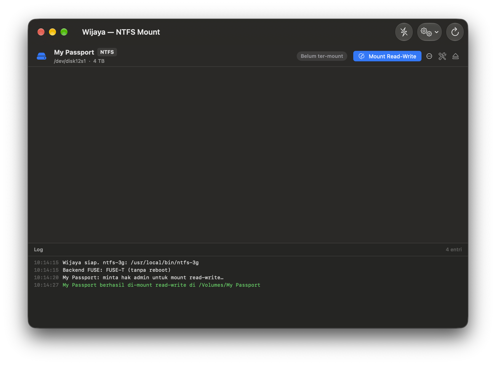
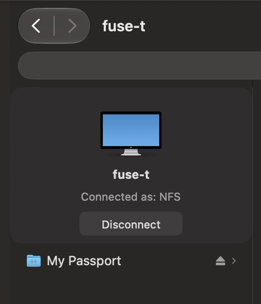
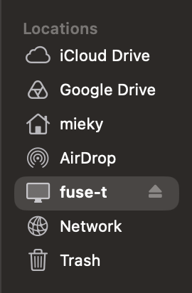

Baca-tulis disk NTFS di Mac — tanpa software berbayar.
Wijaya membuat disk NTFS — HDD, SSD, NVMe, flashdisk —
bisa dibaca-tulis di Finder. Dibungkus dari driver ntfs-3g + FUSE-T, dirancang
untuk Apple Silicon & macOS Tahoe, di mana tool gratis lain gagal karena proteksi macOS.
Tanpa Developer ID berbayar. Paket tidak ditandatangani Apple, jadi saat pertama membuka kamu cukup klik-kanan → Open (atau pakai Homebrew). Terima kasih sudah maklum… 🙏

Bekerja di tempat tool gratis lain menyerah
macOS memblokir akses /dev/disk lewat TCC, dan macFUSE kerap tak bisa
di-aktifkan. Wijaya menangani keduanya.
Kext-less (FUSE-T)
Tidak butuh kernel extension, tidak perlu menurunkan keamanan sistem, dan tidak perlu reboot ke Recovery Mode.
Baca & tulis asli
Mount Read-Write lewat ntfs-3g, plus opsi Read-Only, Unmount, Eject, dan Repair (ntfsfix).
Auto-mount
Opsional: begitu disk NTFS dicolok, langsung read-write tanpa klik dan tanpa prompt — lewat LaunchAgent.
Yang menentukan itu filesystem, bukan jenis disk
HDD, SSD, NVMe, flashdisk, SD card — semuanya sama saja. Wijaya fokus pada NTFS, dan menampilkan format lain dengan status yang jujur.
NTFS → butuh Wijaya
macOS cuma bisa membaca NTFS. Wijaya memberi baca-tulis penuh lewat
ntfs-3g — apa pun medianya, termasuk SSD berformat NTFS.
exFAT · FAT32 · APFS · HFS+ → sudah bawaan macOS
Format-format ini sudah read-write tanpa tool tambahan. Wijaya tetap menampilkannya beserta statusnya, plus tombol Unmount/Eject.
ext4 / Btrfs (Linux) belum didukung.
Terlihat seperti aplikasi Mac pada umumnya


Panduan lengkap (5 langkah)
Total sekitar 5 menit. Butuh Homebrew dan macOS 14+ di Apple Silicon.
-
Pasang FUSE-T (prasyarat)
brew install --cask macos-fuse-t/homebrew-cask/fuse-t
-
Unduh & pasang Wijaya
Ambil
.dmgdari halaman Releases, buka, lalu dobel-klik installer. Karena belum ditandatangani Apple, buka dengan klik-kanan → Open.# alternatif lewat Terminal (jika membuka lewat klik sulit): sudo installer -pkg Wijaya-1.1.pkg -target / -allowUntrusted
-
Beri izin Full Disk Access
System Settings → Privacy & Security → Full Disk Access → klik
+→ tekan⌘⇧Glalu ketik path. Tambahkan ketiganya:/usr/local/bin/ntfs-3g /bin/bash Wijaya.app
Ini wajib: macOS memblokir akses
/dev/disklewat TCC, bahkan untuk root. Tanpa izin ini mount gagal dengan “Operation not permitted”. -
Buka Wijaya & mount
Colok disk NTFS-mu → klik Mount Read-Write → masukkan password admin.
-
Selalu Eject sebelum mencabut
FUSE-T punya write cache. Klik Eject dulu, baru cabut — supaya NTFS tidak korup.
Suka build dari sumber? Semua langkahnya ada di README.
Pertanyaan yang sering muncul
Kenapa ada peringatan “unidentified developer”?
Kenapa butuh Full Disk Access?
/dev/disk
bahkan untuk proses root. Beri izin Full Disk Access ke
/usr/local/bin/ntfs-3g, /bin/bash, dan Wijaya.app agar
driver bisa membuka device.